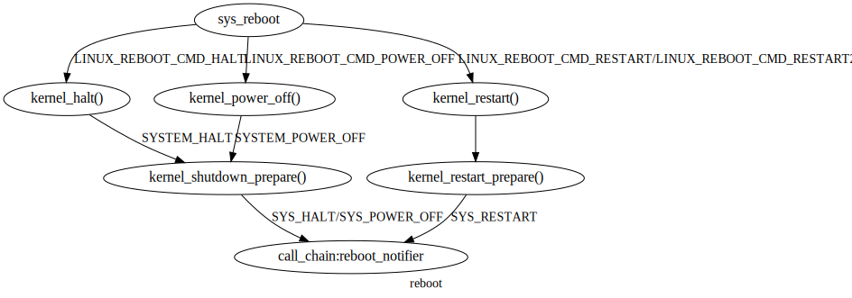

linux 内核通知/通信机制¶
核间通信:IPI¶
触发本CPU或单个或几个或全部CPU的某个中断向量。 x86-64中断向量总结为：
1 2 3 4 5 6 7 8 9 10 11 12 13 14 15 16 17 18 19 20 21 22 23 24 25 26 27 28 29 30 31 32 33 34 35 36 37 38 39 40 41 42 43 44 45 46 47 48 49 50 51 52 53 54 55 56 57 58 59 60 61 62 63 64 65 66 67 68 69 70 71 72 73 74 75 76 77 78 79 80 81 82 83 84 85 86 87 88 89 90 91 92 93 94 95 96 97 98 99 100 101 102 103 104 105 106 107 108 109 110 111 112 113 114 115 116 117 118 119 120 121 122 123 124 125 126 127 128 129 130 131 132 133 134 135 136 137 138 139 140 141 142 143 144 145 146 147 148 149 150 151 152 153 154 155 156 157 158 159 160 161 162 163 164 165 166 167 168 169 170 171 172 173 | arch/x86/kernel/apic/ipi.c
*
* Send a 'reschedule' IPI to another CPU. It goes straight through and
* wastes no time serializing anything. Worst case is that we lose a
* reschedule ...
*/
void native_smp_send_reschedule(int cpu)
{
if (unlikely(cpu_is_offline(cpu))) {
WARN(1, "sched: Unexpected reschedule of offline CPU#%d!\n", cpu);
return;
}
apic->send_IPI(cpu, RESCHEDULE_VECTOR);
}
void native_send_call_func_single_ipi(int cpu)
{
apic->send_IPI(cpu, CALL_FUNCTION_SINGLE_VECTOR);
}
void native_send_call_func_ipi(const struct cpumask *mask)
{
if (static_branch_likely(&apic_use_ipi_shorthand)) {
unsigned int cpu = smp_processor_id();
if (!cpumask_or_equal(mask, cpumask_of(cpu), cpu_online_mask))
goto sendmask;
if (cpumask_test_cpu(cpu, mask))
apic->send_IPI_all(CALL_FUNCTION_VECTOR);
else if (num_online_cpus() > 1)
apic->send_IPI_allbutself(CALL_FUNCTION_VECTOR);
return;
}
sendmask:
apic->send_IPI_mask(mask, CALL_FUNCTION_VECTOR);
}
void __default_send_IPI_shortcut(unsigned int shortcut, int vector)
{
/*
* Subtle. In the case of the 'never do double writes' workaround
* we have to lock out interrupts to be safe. As we don't care
* of the value read we use an atomic rmw access to avoid costly
* cli/sti. Otherwise we use an even cheaper single atomic write
* to the APIC.
*/
unsigned int cfg;
/*
* Wait for idle.
*/
if (unlikely(vector == NMI_VECTOR))
safe_apic_wait_icr_idle();
else
__xapic_wait_icr_idle();
/*
* No need to touch the target chip field. Also the destination
* mode is ignored when a shorthand is used.
*/
cfg = __prepare_ICR(shortcut, vector, 0);
/*
* Send the IPI. The write to APIC_ICR fires this off.
*/
native_apic_mem_write(APIC_ICR, cfg);
}
/*
* This is used to send an IPI with no shorthand notation (the destination is
* specified in bits 56 to 63 of the ICR).
*/
void __default_send_IPI_dest_field(unsigned int mask, int vector, unsigned int dest)
{
unsigned long cfg;
/*
* Wait for idle.
*/
if (unlikely(vector == NMI_VECTOR))
safe_apic_wait_icr_idle();
else
__xapic_wait_icr_idle();
/*
* prepare target chip field
*/
cfg = __prepare_ICR2(mask);
native_apic_mem_write(APIC_ICR2, cfg);
/*
* program the ICR
*/
cfg = __prepare_ICR(0, vector, dest);
/*
* Send the IPI. The write to APIC_ICR fires this off.
*/
native_apic_mem_write(APIC_ICR, cfg);
}
void default_send_IPI_single_phys(int cpu, int vector)
{
unsigned long flags;
local_irq_save(flags);
__default_send_IPI_dest_field(per_cpu(x86_cpu_to_apicid, cpu),
vector, APIC_DEST_PHYSICAL);
local_irq_restore(flags);
}
void default_send_IPI_mask_sequence_phys(const struct cpumask *mask, int vector)
{
unsigned long query_cpu;
unsigned long flags;
/*
* Hack. The clustered APIC addressing mode doesn't allow us to send
* to an arbitrary mask, so I do a unicast to each CPU instead.
* - mbligh
*/
local_irq_save(flags);
for_each_cpu(query_cpu, mask) {
__default_send_IPI_dest_field(per_cpu(x86_cpu_to_apicid,
query_cpu), vector, APIC_DEST_PHYSICAL);
}
local_irq_restore(flags);
}
void default_send_IPI_mask_allbutself_phys(const struct cpumask *mask,
int vector)
{
unsigned int this_cpu = smp_processor_id();
unsigned int query_cpu;
unsigned long flags;
/* See Hack comment above */
local_irq_save(flags);
for_each_cpu(query_cpu, mask) {
if (query_cpu == this_cpu)
continue;
__default_send_IPI_dest_field(per_cpu(x86_cpu_to_apicid,
query_cpu), vector, APIC_DEST_PHYSICAL);
}
local_irq_restore(flags);
}
/*
* Helper function for APICs which insist on cpumasks
*/
void default_send_IPI_single(int cpu, int vector)
{
apic->send_IPI_mask(cpumask_of(cpu), vector);
}
void default_send_IPI_allbutself(int vector)
{
__default_send_IPI_shortcut(APIC_DEST_ALLBUT, vector);
}
void default_send_IPI_all(int vector)
{
__default_send_IPI_shortcut(APIC_DEST_ALLINC, vector);
}
void default_send_IPI_self(int vector)
{
__default_send_IPI_shortcut(APIC_DEST_SELF, vector);
}
|
irq work¶
提供一个框架，用于从 hardirq 上下文中排队和运行回调.就是一种在硬件中断上下文中运行任务的途径。
1 2 3 4 5 6 7 8 9 10 11 12 13 14 15 16 17 18 19 20 21 22 23 24 25 26 27 28 29 30 31 32 33 34 35 36 37 38 39 40 41 42 43 44 45 46 47 48 49 50 51 52 53 54 55 56 57 58 59 60 61 62 63 64 65 66 67 68 69 70 71 72 73 74 75 76 77 78 79 80 81 82 83 84 85 86 87 88 | static DEFINE_PER_CPU(struct llist_head, raised_list);
static DEFINE_PER_CPU(struct llist_head, lazy_list);
/* Enqueue on current CPU, work must already be claimed and preempt disabled */
static void __irq_work_queue_local(struct irq_work *work)
{
/* If the work is "lazy", handle it from next tick if any */
if (atomic_read(&work->node.a_flags) & IRQ_WORK_LAZY) {
if (llist_add(&work->node.llist, this_cpu_ptr(&lazy_list)) &&
tick_nohz_tick_stopped())
arch_irq_work_raise();
} else {
if (llist_add(&work->node.llist, this_cpu_ptr(&raised_list)))
arch_irq_work_raise();/* apic->send_IPI_self(IRQ_WORK_VECTOR):触发：irq_work中断向量：0xf6 */
}
}
/* Enqueue the irq work @work on the current CPU */
bool irq_work_queue(struct irq_work *work)
{
/* Only queue if not already pending */
if (!irq_work_claim(work))
return false;
/* Queue the entry and raise the IPI if needed. */
preempt_disable();
__irq_work_queue_local(work);
preempt_enable();
return true;
}
EXPORT_SYMBOL_GPL(irq_work_queue);
void irq_work_single(void *arg)
{
struct irq_work *work = arg;
int flags;
/*
* Clear the PENDING bit, after this point the @work can be re-used.
* The PENDING bit acts as a lock, and we own it, so we can clear it
* without atomic ops.
*/
flags = atomic_read(&work->node.a_flags);
flags &= ~IRQ_WORK_PENDING;
atomic_set(&work->node.a_flags, flags);
/*
* See irq_work_claim().
*/
smp_mb();
lockdep_irq_work_enter(flags);
work->func(work);/* 运行中断函数 */
lockdep_irq_work_exit(flags);
/*
* Clear the BUSY bit, if set, and return to the free state if no-one
* else claimed it meanwhile.
*/
(void)atomic_cmpxchg(&work->node.a_flags, flags, flags & ~IRQ_WORK_BUSY);
}
static void irq_work_run_list(struct llist_head *list)
{
struct irq_work *work, *tmp;
struct llist_node *llnode;
BUG_ON(!irqs_disabled());
if (llist_empty(list))
return;
llnode = llist_del_all(list);
llist_for_each_entry_safe(work, tmp, llnode, node.llist)
irq_work_single(work);
}
/*
* hotplug calls this through:
* hotplug_cfd() -> flush_smp_call_function_queue()
*/
void irq_work_run(void)
{
irq_work_run_list(this_cpu_ptr(&raised_list));
irq_work_run_list(this_cpu_ptr(&lazy_list));
}
EXPORT_SYMBOL_GPL(irq_work_run);
|
重要结构：
1 2 3 4 5 6 7 8 9 10 11 12 13 14 15 16 17 18 19 20 21 22 23 24 25 26 27 28 29 30 31 32 33 34 35 36 37 38 39 40 41 42 43 44 45 46 47 48 49 50 51 52 53 54 55 56 57 58 59 60 61 62 63 64 65 66 67 68 69 70 71 72 73 74 75 76 77 | enum {
CSD_FLAG_LOCK = 0x01,
IRQ_WORK_PENDING = 0x01,
IRQ_WORK_BUSY = 0x02,
IRQ_WORK_LAZY = 0x04, /* No IPI, wait for tick */
IRQ_WORK_HARD_IRQ = 0x08, /* IRQ context on PREEMPT_RT */
IRQ_WORK_CLAIMED = (IRQ_WORK_PENDING | IRQ_WORK_BUSY),
CSD_TYPE_ASYNC = 0x00,
CSD_TYPE_SYNC = 0x10,
CSD_TYPE_IRQ_WORK = 0x20,
CSD_TYPE_TTWU = 0x30,
CSD_FLAG_TYPE_MASK = 0xF0,
};
/*
* struct __call_single_node is the primary type on
* smp.c:call_single_queue.
*
* flush_smp_call_function_queue() only reads the type from
* __call_single_node::u_flags as a regular load, the above
* (anonymous) enum defines all the bits of this word.
*
* Other bits are not modified until the type is known.
*
* CSD_TYPE_SYNC/ASYNC:
* struct {
* struct llist_node node;
* unsigned int flags;
* smp_call_func_t func;
* void *info;
* };
*
* CSD_TYPE_IRQ_WORK:
* struct {
* struct llist_node node;
* atomic_t flags;
* void (*func)(struct irq_work *);
* };
*
* CSD_TYPE_TTWU:
* struct {
* struct llist_node node;
* unsigned int flags;
* };
*
*/
struct __call_single_node {
struct llist_node llist;
union {
unsigned int u_flags;
atomic_t a_flags;
};
#ifdef CONFIG_64BIT
u16 src, dst;
#endif
};
/*
* An entry can be in one of four states:
*
* free NULL, 0 -> {claimed} : free to be used
* claimed NULL, 3 -> {pending} : claimed to be enqueued
* pending next, 3 -> {busy} : queued, pending callback
* busy NULL, 2 -> {free, claimed} : callback in progress, can be claimed
*/
struct irq_work {
struct __call_single_node node;
void (*func)(struct irq_work *);
};
|
通常流程：
- sysvec_irq_work ==> irq_work_run;//irq_work_vetor: 0xf6:
arch_irq_work_raise(void): apic->send_IPI_self(IRQ_WORK_VECTOR);
- bool irq_work_queue(struct irq_work *work) ->__irq_work_queue_local(work); -> arch_irq_work_raise(void)-> apic->send_IPI_self(IRQ_WORK_VECTOR):
- -> sysvec_irq_work -> irq_work_run:
irq_work_run_list(this_cpu_ptr(&raised_list));
irq_work_run_list(this_cpu_ptr(&lazy_list));
irq work 处理：向量IRQ_WORK_VECTOR处理函数
1 2 3 4 5 6 7 8 9 10 11 12 13 14 15 16 17 18 19 | #ifdef CONFIG_X86_LOCAL_APIC
DEFINE_IDTENTRY_SYSVEC(sysvec_irq_work)
{
ack_APIC_irq();
trace_irq_work_entry(IRQ_WORK_VECTOR);
inc_irq_stat(apic_irq_work_irqs);
irq_work_run();/* 运行列表 */
trace_irq_work_exit(IRQ_WORK_VECTOR);
}
void arch_irq_work_raise(void)/* 触发irq work */
{
if (!arch_irq_work_has_interrupt())
return;
apic->send_IPI_self(IRQ_WORK_VECTOR);
apic_wait_icr_idle();
}
#endif
|
特例：mpcfd_dying_cpu –> irq_work_run;
编程：
1 2 3 4 5 6 7 8 9 | static void late_wakeup_func(struct irq_work *work)
{
}
static DEFINE_PER_CPU(struct irq_work, late_wakeup_work) =
IRQ_WORK_INIT(late_wakeup_func);
irq_work_queue(this_cpu_ptr(&late_wakeup_work));
|
等待队列（进程/线程)¶
include/linux/wait.h kernel/sched/wait.c 进程等待队列:用于同步
进程A调用wait_event(wq, condition)就是向等待队列头中添加等待队列项wait_queue_t，该该等待队列项中的成员变量private记录当前进程，其成员变量func记录唤醒回调函数，然后调用schedule()使当前进程进入休眠状态。 进程B调用wake_up(wq)会遍历整个等待列表wq中的每一项wait_queue_t，依次调用每一项的唤醒函数try_to_wake_up()。这个过程会将private记录的进程加入rq运行队列，并设置进程状态为TASK_RUNNING。 进程A被唤醒后只执行如下检测： 检查condition是否为true，满足条件则跳出循环，再把wait_queue_t从wq队列中移除； 检测该进程task的成员thread_info->flags是否被设置TIF_SIGPENDING，被设置则说明有待处理的信号，则跳出循环，再把wait_queue_t从wq队列中移除； 否则，继续调用schedule()再次进入休眠等待状态，如果wait_queue_t不在wq队列，则再次加入wq队列。
等待队列原理上一个进程运行到某个点，发现调价不满足，然后就将自己挂到一个等待队列结构的链表上，根据结构是不可中断或可中断唤醒两种模式进程将当前进程的状态设置为可中断睡眠或不可中断睡眠，然后调用调度函数将自己换出：唤醒时，唤醒主题针对等得队列结构上的进程列表中的进程进行操作，在操作函数中设置相应进程状态。
TASK_INTERRUPTIBLE是针对某个特定事件和特定资源，设置进程睡眠。当内核发送信号给该进程，告知特定事件发生，该进程会被置为TASK_RUNNING，之后调度器会在合适的时间运行它。 TASK_UNINTERRUPTIBLE是进程主动睡眠，它们不会被外部信号唤醒，只能有内核亲自唤醒该进程。 这两个参数的应用场景也有差异，在一些应用中，如与用户有交互的进程，那么它就应该要接收一些特定信号，如ctl+C，举个例子，sysfs中，如果要去获得某个锁，那么就建议使用interrupt版的锁，记得判定返回值。 而在另一些场景中，如读写硬件寄存器时，就需要uninterrupt类型的信号，因为它只期望两种结果，一个是硬件及时返回后，将其唤醒，另一个就是超时后，进程需要自己唤醒自己。
进程为了等待某个事件/条件满足将自己加入某个等待队列，进程将自身设置为某个睡眠状态，条件满足时对因为本条件而进入睡眠状态的进程进行唤醒。
人与进程就这么相似，可以认为世界只有自己，可高度稍微一上升，进程也只是一蝼蚁。
结构：
等待队列结构¶1 2 3 4 5 6 7 8 9 10 11 12 13 14 15 16 17 18 19 20 21 22 23 24 25 26 27 28
typedef struct wait_queue_entry wait_queue_entry_t; typedef int (*wait_queue_func_t)(struct wait_queue_entry *wq_entry, unsigned mode, int flags, void *key); int default_wake_function(struct wait_queue_entry *wq_entry, unsigned mode, int flags, void *key); /* wait_queue_entry::flags */ #define WQ_FLAG_EXCLUSIVE 0x01 #define WQ_FLAG_WOKEN 0x02 #define WQ_FLAG_BOOKMARK 0x04 #define WQ_FLAG_CUSTOM 0x08 #define WQ_FLAG_DONE 0x10 #define WQ_FLAG_PRIORITY 0x20 /* * A single wait-queue entry structure: */ struct wait_queue_entry { unsigned int flags; void *private; wait_queue_func_t func; struct list_head entry; }; struct wait_queue_head { spinlock_t lock; struct list_head head; }; typedef struct wait_queue_head wait_queue_head_t;
简单睡眠等待：
#define wait_event(wq_head, condition) do {
might_sleep(); if (condition)
break;
__wait_event(wq_head, condition);
} while (0)
static wait_queue_head_t shutdown_wq;
init_waitqueue_head(&shutdown_wq);
- wait_event(shutdown_wq,
atomic_read(&n_rcu_scale_writer_finished) >= nrealwriters);
wake_up(&shutdown_wq); –> __wake_up() –>__wake_up_common_lock();–> __wake_up_common();
等待队列分类总结
工作队列¶
kernel/workqueue.c - 使用共享工作池的通用异步执行
这部分很有难度，自己的理解也很有限：
有很多情况需要异步流程执行上下文，而工作队列 (wq) API 是此类情况最常用的机制。当需要这样的异步执行上下文时，将描述要执行哪个函数的工作项放在队列中。一个独立的线程充当异步执行上下文。队列称为workqueue，线程称为worker。当工作队列上有工作项时，工作人员一个接一个地执行与工作项相关的功能。当工作队列上没有工作项时，工作人员将变得空闲。当一个新的工作项进入队列时，worker 再次开始执行。
基础¶
并发管理工作队列 (cmwq) 是 wq 的重新实现，重点关注以下目标。
保持与原始工作队列 API 的兼容性。
使用所有 wq 共享的 per-CPU 统一工作池来按需提供灵活的并发级别，而不会浪费大量资源。
自动调节工作池和并发级别，使 API 用户无需担心这些细节。
原理
为了简化函数的异步执行，引入了一个新的抽象，工作项。
工作项是一个简单的结构，它包含一个指向要异步执行的函数的指针。每当驱动程序或子系统想要异步执行一个函数时，它必须设置一个指向该函数的工作项并将该工作项排队到工作队列中。
特殊用途的线程，称为工作线程，一个接一个地执行队列外的功能。如果没有工作排队，工作线程将变为空闲状态。这些工作线程在所谓的工作池中进行管理。
cmwq 设计区分了子系统和驱动程序在其上排队工作项的面向用户的工作队列和管理工作池和处理排队工作项的后端机制。
有两个工作池，一个用于正常工作项目，另一个用于高优先级工作项目，用于每个可能的 CPU 和一些额外的工作池来服务在未绑定工作队列上排队的工作项目 - 这些后备池的数量是动态的。
子系统和驱动程序可以通过他们认为合适的特殊工作队列 API 函数来创建和排队工作项。他们可以通过在他们放置工作项的工作队列上设置标志来影响工作项执行方式的某些方面。这些标志包括 CPU 位置、并发限制、优先级等。要获得详细的概述，请参阅下面的 API 描述 alloc_workqueue()。
当工作项入队到工作队列时，根据队列参数和工作队列属性确定目标工作池，并附加到工作池的共享工作列表中。例如，除非特别重写，否则绑定工作队列的工作项将在与运行发行者的 CPU 相关联的正常或高优先级工作池的工作列表中排队。
对于任何工作池实现，管理并发级别（有多少执行上下文处于活动状态）都是一个重要问题。cmwq 尝试将并发性保持在最低但足够的水平。最大限度地节省资源并且足够，因为系统被充分利用。
每个绑定到实际 CPU 的工作池通过挂钩到调度程序来实现并发管理。每当活跃的工作人员醒来或睡觉时，工作人员池都会收到通知，并跟踪当前可运行的工作人员的数量。通常，工作项不会占用 CPU 并消耗很多周期。这意味着保持足够的并发性以防止工作处理停止应该是最佳的。只要 CPU 上有一个或多个可运行的 worker，worker-pool 就不会开始执行新的工作，但是，当最后一个运行的 worker 进入睡眠状态时，它会立即调度一个新的 worker，以便 CPU 不会当有待处理的工作项时，不要闲着。这允许在不损失执行带宽的情况下使用最少数量的工作人员。
除了 kthreads 的内存空间之外，保持空闲工作人员不会花费其他成本，因此 cmwq 在杀死空闲工作人员之前会保留一段时间。
对于未绑定的工作队列，后备池的数量是动态的。可以使用为未绑定的工作队列分配自定义属性， apply_workqueue_attrs()并且工作队列将自动创建与属性匹配的后备工作池。调节并发级别的责任在用户身上。还有一个标志来标记一个绑定的 wq 以忽略并发管理。有关详细信息，请参阅 API 部分。
前向进度保证依赖于在需要更多执行上下文时可以创建工作人员，而这反过来又通过使用救援工作人员来保证。所有可能在处理内存回收的代码路径上使用的工作项都需要在 wq 上排队，这些 wq 有一个为在内存压力下执行而保留的救援工作人员。否则，等待执行上下文释放的工作池可能会死锁。
- api
alloc_workqueue()分配一个 wq。原始 create_*workqueue()功能已弃用并计划删除。 alloc_workqueue()接受三个参数-@name和 . 是 wq 的名称，如果有的话，也用作救援线程的名称。@flags@max_active@name
wq 不再管理执行资源，而是用作向前进度保证、刷新和工作项属性的域。@flags 并@max_active控制如何为工作项分配执行资源、计划和执行。
flags WQ_UNBOUND 排队到未绑定 wq 的工作项由特殊的工作池提供服务，这些工作池托管未绑定到任何特定 CPU 的工作人员。这使得 wq 表现为一个没有并发管理的简单执行上下文提供者。未绑定的工作池尝试尽快开始执行工作项。未绑定 wq 牺牲了局部性，但对以下情况很有用。
预计并发级别要求会有很大的波动，并且使用绑定 wq 最终可能会在发行者通过不同的 CPU 跳跃时在不同的 CPU 上创建大量大部分未使用的工作人员。
系统调度程序可以更好地管理长时间运行的 CPU 密集型工作负载。
WQ_FREEZABLE 一个可冻结的 wq 参与系统挂起操作的冻结阶段。wq 上的工作项被耗尽，并且在解冻之前没有新的工作项开始执行。
WQ_MEM_RECLAIM 所有可能在内存回收路径中使用的 wq 都必须 设置此标志。无论内存压力如何，都保证 wq 具有至少一个执行上下文。
WQ_HIGHPRI highpri wq 的工作项排队到目标 cpu 的 highpri 工作池。Highpri 工作池由具有较高 nice 级别的工作线程提供服务。
请注意，正常和高优先级工作池不会相互交互。每个都维护其单独的工作人员池并在其工作人员之间实施并发管理。
WQ_CPU_INTENSIVE CPU 密集型 wq 的工作项对并发级别没有贡献。换句话说，可运行的 CPU 密集型工作项不会阻止同一工作池中的其他工作项开始执行。这对于预计会占用 CPU 周期的绑定工作项很有用，因此它们的执行由系统调度程序调节。
尽管 CPU 密集型工作项对并发级别没有贡献，但它们的执行开始仍受并发管理的约束，并且可运行的非 CPU 密集型工作项可能会延迟 CPU 密集型工作项的执行。
这个标志对于未绑定的 wq 是没有意义的。
max_active
@max_active确定每个 CPU 可以分配给 wq 的工作项的最大执行上下文数。例如，@max_active16 个，每个 CPU 最多可以同时执行 wq 的 16 个工作项。
目前，对于绑定的 wq，最大限制为@max_active512，指定 0 时使用的默认值为 256。对于未绑定的 wq，限制高于 512 和 4 * num_possible_cpus()。这些值选择得足够高，这样它们就不是限制因素，同时在失控情况下提供保护。
wq 的活跃工作项的数量通常由 wq 的用户来调节，更具体地说，由用户可以同时排队的工作项的数量来调节。除非特别需要限制活动工作项的数量，否则建议指定“0”。
一些用户依赖于 ST wq 的严格执行顺序。@max_active1 和的组合WQ_UNBOUND用于实现此行为。这种 wq 上的工作项总是排队到未绑定的工作池中，并且在任何给定时间只有一个工作项可以处于活动状态，从而实现与 ST wq 相同的排序属性。
在当前实现中，上述配置仅保证给定 NUMA 节点内的 ST 行为。相反alloc_ordered_queue()应该用于实现系统范围的 ST 行为。
- 示例：
以下示例执行场景试图说明 cmwq 在不同配置下的行为方式。
工作项 w0、w1、w2 排队到同一 CPU 上的绑定 wq q0。w0 将 CPU 烧 5 毫秒，然后休眠 10 毫秒，然后在完成之前再次将 CPU 烧 5 毫秒。w1 和 w2 烧 CPU 5ms 然后休眠 10ms。
忽略所有其他任务、工作和处理开销，并假设简单的 FIFO 调度，以下是原始 wq 的可能事件序列的一个高度简化版本。
softirq基础结构¶1 2 3 4 5 6 7 8 9 10 11
TIME IN MSECS EVENT 0 w0 starts and burns CPU 5 w0 sleeps 15 w0 wakes up and burns CPU 20 w0 finishes 20 w1 starts and burns CPU 25 w1 sleeps 35 w1 wakes up and finishes 35 w2 starts and burns CPU 40 w2 sleeps 50 w2 wakes up and finishes
如果 cmwq @max_active>= 3，
。。。。。。
- 指导方针
1.WQ_MEM_RECLAIM如果 wq 可以处理在内存回收期间使用的工作项，请不要忘记使用。每个带有 WQ_MEM_RECLAIMset 的 wq 都有一个为其保留的执行上下文。如果在内存回收期间使用的多个工作项之间存在依赖关系，则应将它们排队以将 wq 每个与 WQ_MEM_RECLAIM.
2.除非需要严格排序，否则不需要使用 ST wq。
3.除非有特殊需要，否则建议使用 0 表示 @max_active。在大多数用例中，并发级别通常保持在默认限制以下。
4.wq 用作前向进度保证（WQ_MEM_RECLAIM、刷新和工作项属性）的域。工作项不参与内存回收并且不需要作为一组工作项的一部分进行刷新，并且不需要任何特殊属性，都可以使用系统wq之一。使用专用wq和系统wq在执行特性上没有区别。
5.除非预计工作项会消耗大量 CPU 周期，否则使用绑定的 wq 通常是有益的，因为 wq 操作和工作项执行的局部性水平会提高。
调试
因为工作功能是由通用工作线程执行的，所以需要一些技巧来了解行为不端的工作队列用户。
工作线程在进程列表中显示为：
root 5671 0.0 0.0 0 0 ? S 12:07 0:00 [kworker/0:1] root 5672 0.0 0.0 0 0 ? S 12:07 0:00 [kworker/1:2] root 5673 0.0 0.0 0 0 ? S 12:12 0:00 [kworker/0:0] root 5674 0.0 0.0 0 0 ? S 12:13 0:00 [kworker/1:0] 如果 kworkers 发疯了（使用过多的 cpu），有两种可能的问题：
1.快速连续安排的事情
2.消耗大量 CPU 周期的单个工作项
第一个可以使用跟踪来跟踪：
$ echo workqueue:workqueue_queue_work > /sys/kernel/debug/tracing/set_event $ cat /sys/kernel/debug/tracing/trace_pipe > out.txt (wait a few secs) ^C
如果某些东西在工作队列中忙于循环，它将主导输出，并且可以使用工作项功能确定违规者。
对于第二种类型的问题，应该可以只检查有问题的工作线程的堆栈跟踪。
$ cat /proc/THE_OFFENDING_KWORKER/stack
非重入条件
如果在工作项排队后满足以下条件，Workqueue 保证工作项不能重入：
1.功函数没有改变。
2.没有人将工作项排队到另一个工作队列。
3.工作项尚未重新启动。
换句话说，如果上述条件成立，则保证工作项在任何给定时间最多由系统范围内的一个工作人员执行。
请注意，在 self 函数中将工作项重新排队（到同一个队列）不会破坏这些条件，因此这样做是安全的。否则，在破坏功函数内部的条件时需要小心。
总结(个人理解）¶
linux 软中断：softirq¶
我们看的是线程化的下半部。
软中断：在硬件中断处理程序结束时调用的的句柄
1 2 3 4 5 6 7 8 9 10 11 12 13 14 15 16 17 18 19 20 21 22 23 24 25 26 27 28 29 30 31 32 33 34 | /* PLEASE, avoid to allocate new softirqs, if you need not _really_ high
frequency threaded job scheduling. For almost all the purposes
tasklets are more than enough. F.e. all serial device BHs et
al. should be converted to tasklets, not to softirqs.
*/
/* 所有的软中断向量，数字越小优先级越高 */
enum
{
HI_SOFTIRQ=0,
TIMER_SOFTIRQ,
NET_TX_SOFTIRQ,
NET_RX_SOFTIRQ,
BLOCK_SOFTIRQ,
IRQ_POLL_SOFTIRQ,
TASKLET_SOFTIRQ,
SCHED_SOFTIRQ,
HRTIMER_SOFTIRQ,
RCU_SOFTIRQ, /* Preferable RCU should always be the last softirq */
NR_SOFTIRQS
};
struct softirq_action
{
void (*action)(struct softirq_action *);
};
static struct softirq_action softirq_vec[NR_SOFTIRQS] __cacheline_aligned_in_smp;
DEFINE_PER_CPU(struct task_struct *, ksoftirqd);
const char * const softirq_to_name[NR_SOFTIRQS] = {
"HI", "TIMER", "NET_TX", "NET_RX", "BLOCK", "IRQ_POLL",
"TASKLET", "SCHED", "HRTIMER", "RCU"
};
|
初始化流程：start_kernel–>softirq_init() –>early_initcall(spawn_ksoftirqd)
可以理解为所有软中断通过softirq_action进行组织，数组的每个成员指向处理某类事件的处理函数。函数在不同的CPU上是可重入的。每个CPU上运行的软中断处理线程负责处理本CPU上产生的事件。处理完挂起的事件后内核线程就调度出去。在特定时机唤醒内核线程。内核线程继续检查是否有挂起的事件，周而复始。这个时机在下文中进一步解释。唤醒则参考wakeup_softirqd函数。可考虑比较不同版本内核处理方式上的差异。此时关注内核线程优先级问题。
static struct softirq_action softirq_vec[NR_SOFTIRQS] __cacheline_aligned_in_smp;
DEFINE_PER_CPU(struct task_struct *, ksoftirqd);
1.softirq_init()
struct_task –> mm¶:linenos: /* Tasklets --- multithreaded analogue of BHs. This API is deprecated. Please consider using threaded IRQs instead: https://lore.kernel.org/lkml/20200716081538.2sivhkj4hcyrusem@linutronix.de Main feature differing them of generic softirqs: tasklet is running only on one CPU simultaneously.//与通用软中断不同的主要特点：tasklet只同时在一个 CPU 上运行。 Main feature differing them of BHs: different tasklets may be run simultaneously on different CPUs.//与 BH 不同的主要特征：不同的 tasklet 可以在不同的 CPU 上同时运行。 Properties: * If tasklet_schedule() is called, then tasklet is guaranteed to be executed on some cpu at least once after this. * If the tasklet is already scheduled, but its execution is still not started, it will be executed only once. * If this tasklet is already running on another CPU (or schedule is called from tasklet itself), it is rescheduled for later. * Tasklet is strictly serialized wrt itself, but not wrt another tasklets. If client needs some intertask synchronization, he makes it with spinlocks.//Tasklet 是严格序列化的 wrt 本身，但不是 wrt 另一个 tasklets。如果客户端需要一些任务间同步，他会使用自旋锁来实现。 Tasklet shì yángé xùliè huà de wrt */ struct tasklet_struct { struct tasklet_struct *next; unsigned long state; atomic_t count; bool use_callback; union { void (*func)(unsigned long data); void (*callback)(struct tasklet_struct *t); }; unsigned long data; }; /* * Tasklets */ struct tasklet_head {//tasklet_struct组织方式 struct tasklet_struct *head; struct tasklet_struct **tail; }; static DEFINE_PER_CPU(struct tasklet_head, tasklet_vec); static DEFINE_PER_CPU(struct tasklet_head, tasklet_hi_vec); void __init softirq_init(void) { int cpu; for_each_possible_cpu(cpu) { per_cpu(tasklet_vec, cpu).tail = &per_cpu(tasklet_vec, cpu).head; per_cpu(tasklet_hi_vec, cpu).tail = &per_cpu(tasklet_hi_vec, cpu).head; } open_softirq(TASKLET_SOFTIRQ, tasklet_action);// softirq_vec[TASKLET_SOFTIRQ] = tasklet_action;初始化tasklet_action,具体操作参考下文描述； open_softirq(HI_SOFTIRQ, tasklet_hi_action); // softirq_vec[HI_SOFTIRQ] = tasklet_hi_action;初始化tasklet_hi_action,具体操作参考下文描述； }
spawn_ksoftirqd()：在内核初始化初期为每一个CPU新建内核线程ksoftirqd
处理软终端的内核线程：每个CPU一个¶1 2 3 4 5 6 7 8 9 10 11 12 13 14 15 16
static struct smp_hotplug_thread softirq_threads = { .store = &ksoftirqd,//每个CPU存储struct task指针 .thread_should_run = ksoftirqd_should_run, //判断句柄 .thread_fn = run_ksoftirqd,//处理每个CPU上的软中断 .thread_comm = "ksoftirqd/%u",//每个CPU运行的处理软中断的内核线程名字格式 }; static __init int spawn_ksoftirqd(void) { cpuhp_setup_state_nocalls(CPUHP_SOFTIRQ_DEAD, "softirq:dead", NULL, takeover_tasklets); //cpu:CPUHP_SOFTIRQ_DEAD状态回调函数。 BUG_ON(smpboot_register_percpu_thread(&softirq_threads));// return 0; } early_initcall(spawn_ksoftirqd);//新建内核线程时机
我们看正常运行系统负责处理软中断的内核线程（当前硬件：八核）：
每个CPU运行一个处理软中断的线程¶1 2 3 4 5 6 7 8 9
root@rachel:/usr/src/linux-source-5.14/kernel# ps -aux|grep ksoft root 12 0.0 0.0 0 0 ? S 2021 0:21 [ksoftirqd/0] root 18 0.0 0.0 0 0 ? S 2021 0:03 [ksoftirqd/1] root 23 0.0 0.0 0 0 ? S 2021 0:00 [ksoftirqd/2] root 28 0.0 0.0 0 0 ? S 2021 0:00 [ksoftirqd/3] root 33 0.0 0.0 0 0 ? S 2021 0:01 [ksoftirqd/4] root 38 0.0 0.0 0 0 ? S 2021 0:01 [ksoftirqd/5] root 43 0.0 0.0 0 0 ? S 2021 7:52 [ksoftirqd/6] root 48 0.0 0.0 0 0 ? S 2021 0:02 [ksoftirqd/7]
到目前为止，初始化就完成了，我们看其运行周期：
软中断运行点：
ksoftirqd线程唤醒时机¶1 2 3 4 5 6 7 8 9 10 11 12 13 14
/* * we cannot loop indefinitely here to avoid userspace starvation, * but we also don't want to introduce a worst case 1/HZ latency * to the pending events, so lets the scheduler to balance * the softirq load for us. */ static void wakeup_softirqd(void) { /* Interrupts are disabled: no need to stop preemption */ struct task_struct *tsk = __this_cpu_read(ksoftirqd); if (tsk) wake_up_process(tsk); }
__do_softirq –> wakeup_softirqd:具体唤醒时间点:
具体场景：irq_exit_rcu(void) –>__irq_exit_rcu –>invoke_softirq() –>wakeup_softirqd / __do_softirq_
具体场景：irq_exit(void) –>__irq_exit_rcu –>invoke_softirq() –>wakeup_softirqd / __do_softirq_
具体场景：raise_softirq_irqoff –> wakeup_softirqd
具体场景：raise_softirq –> raise_softirq_irqoff –> wakeup_softirqd
具体场景： __local_bh_enable_ip –> wakeup_softirqd
为某类软中断初始化处理句柄：
open_softirq(NET_TX_SOFTIRQ, net_tx_action);
struct_task –> mm¶1 2 3 4
void open_softirq(int nr, void (*action)(struct softirq_action *)) { softirq_vec[nr].action = action; }
每个类型的软中断有一个hook，怎么处理，怎么组织这类事件则在这个hook中处理。
我们以net_tx_action为例，看下其代码：
net_tx_action分析¶1 2 3 4 5 6 7 8 9 10 11 12 13 14 15 16 17 18 19 20 21 22 23 24 25 26 27 28 29 30 31 32 33 34 35 36 37 38 39 40 41 42 43 44 45 46 47 48 49 50 51 52 53 54 55 56 57 58 59 60 61 62 63 64 65 66 67 68 69 70 71 72 73 74 75 76 77 78 79 80
static __latent_entropy void net_tx_action(struct softirq_action *h) { struct softnet_data *sd = this_cpu_ptr(&softnet_data); if (sd->completion_queue) { struct sk_buff *clist; local_irq_disable(); clist = sd->completion_queue; sd->completion_queue = NULL; local_irq_enable(); while (clist) { struct sk_buff *skb = clist; clist = clist->next; WARN_ON(refcount_read(&skb->users)); if (likely(get_kfree_skb_cb(skb)->reason == SKB_REASON_CONSUMED)) trace_consume_skb(skb); else trace_kfree_skb(skb, net_tx_action); if (skb->fclone != SKB_FCLONE_UNAVAILABLE) __kfree_skb(skb); else __kfree_skb_defer(skb); } } if (sd->output_queue) { struct Qdisc *head; local_irq_disable(); head = sd->output_queue; sd->output_queue = NULL; sd->output_queue_tailp = &sd->output_queue; local_irq_enable(); rcu_read_lock(); while (head) { struct Qdisc *q = head; spinlock_t *root_lock = NULL; head = head->next_sched; /* We need to make sure head->next_sched is read * before clearing __QDISC_STATE_SCHED */ smp_mb__before_atomic(); if (!(q->flags & TCQ_F_NOLOCK)) { root_lock = qdisc_lock(q); spin_lock(root_lock); } else if (unlikely(test_bit(__QDISC_STATE_DEACTIVATED, &q->state))) { /* There is a synchronize_net() between * STATE_DEACTIVATED flag being set and * qdisc_reset()/some_qdisc_is_busy() in * dev_deactivate(), so we can safely bail out * early here to avoid data race between * qdisc_deactivate() and some_qdisc_is_busy() * for lockless qdisc. */ clear_bit(__QDISC_STATE_SCHED, &q->state); continue; } clear_bit(__QDISC_STATE_SCHED, &q->state); qdisc_run(q); if (root_lock) spin_unlock(root_lock); } rcu_read_unlock(); } xfrm_dev_backlog(sd); }
软中断处理的任务：
kernel/softirq.c:open_softirq(TASKLET_SOFTIRQ, tasklet_action);// softirq_vec[TASKLET_SOFTIRQ] = tasklet_action;
kernel/softirq.c:open_softirq(HI_SOFTIRQ, tasklet_hi_action); // softirq_vec[HI_SOFTIRQ] = tasklet_hi_action;
kernel/time/timer.c:2024: open_softirq(TIMER_SOFTIRQ, run_timer_softirq);
kernel/time/hrtimer.c:2165: open_softirq(HRTIMER_SOFTIRQ, hrtimer_run_softirq);
kernel/rcu/tiny.c:222: open_softirq(RCU_SOFTIRQ, rcu_process_callbacks) + kernel/rcu/tree.c:4757: open_softirq(RCU_SOFTIRQ, rcu_core_si);
kernel/sched/fair.c:11578: open_softirq(SCHED_SOFTIRQ, run_rebalance_domains);
net/core/dev.c:11718: open_softirq(NET_TX_SOFTIRQ, net_tx_action);
net/core/dev.c:11719: open_softirq(NET_RX_SOFTIRQ, net_rx_action);
block/blk-mq.c:4018: open_softirq(BLOCK_SOFTIRQ, blk_done_softirq);
lib/irq_poll.c:210: open_softirq(IRQ_POLL_SOFTIRQ, irq_poll_softirq);
- 总结：
软中断与irq work差别: 软中断在内核线程上线文中执行，irq work在硬件中断上下文中执行；
每个软中断任务同一时刻只能在一个CPU上运行。
notifier通知链¶
应用场景描述:管理通知链的例程，用于将状态更改传递给任何感兴趣的例程。 对某个状态感兴趣的例程则可以将自己的状态处理hook注册到对应通知链上。
- 通知链分类
原子通知链：在中断/原子上下文中运行回调。回调例程中不允许阻塞。
可阻塞通知链：运行在进程上下文，回调例程中允许阻塞。
原始通知链：对回调例程的调用、注册、注销没有限制，由调用者提供加锁和保护。
SRCU通知链：阻塞通知链的一种变体，具有相同的限制。
可以从原子上下文调用atomic_notifier_chain_register()，但只能从进程上下文调用blocking_notifier_chain_register()和srcu_notifier_chain_register()，这个规则同样适用于对应的注销函数。 不能在通知链中调用atomic_notifier_chain_unregister(), blocking_notifier_chain_unregister()和srcu_notifier_chain_unregister()函数。
SRCU通知链是阻塞通知链的变体。用SRCU（Sleepable Read-Copy Update）代替rw信号量作为链的保护方式。srcu_notifier_call_chain()有很低的开销：no cache bounces and no memory barriers.当链会被非常频繁地调用但 notifier_blocks 很少被删除时，应该使用 SRCU 通知链。
结构
notifier相关结构¶1 2 3 4 5 6 7 8 9 10 11 12 13 14 15 16 17 18 19 20 21 22 23 24 25 26 27 28 29 30
struct notifier_block; typedef int (*notifier_fn_t)(struct notifier_block *nb, unsigned long action, void *data); struct notifier_block { notifier_fn_t notifier_call; struct notifier_block __rcu *next; int priority; }; struct atomic_notifier_head { spinlock_t lock; struct notifier_block __rcu *head; }; struct blocking_notifier_head { struct rw_semaphore rwsem; struct notifier_block __rcu *head; }; struct raw_notifier_head { struct notifier_block __rcu *head; }; struct srcu_notifier_head { struct mutex mutex; struct srcu_struct srcu; struct notifier_block __rcu *head; };
通知链声明：
通知链初始化¶1 2 3 4 5
#define ATOMIC_NOTIFIER_HEAD(name) 。。。。。。 #define BLOCKING_NOTIFIER_HEAD(name) 。。。。。。 #define RAW_NOTIFIER_HEAD(name) 。。。。。。 #define SRCU_NOTIFIER_HEAD(name) 。。。。。。 #define SRCU_NOTIFIER_HEAD_STATIC(name) 。。。。。。
导出符号
导出函数¶1 2 3 4 5 6 7 8 9 10 11 12 13 14 15 16 17 18
EXPORT_SYMBOL_GPL(atomic_notifier_chain_register); EXPORT_SYMBOL_GPL(atomic_notifier_chain_unregister); EXPORT_SYMBOL_GPL(atomic_notifier_call_chain_robust); EXPORT_SYMBOL_GPL(atomic_notifier_call_chain); EXPORT_SYMBOL_GPL(blocking_notifier_chain_register); EXPORT_SYMBOL_GPL(blocking_notifier_chain_unregister); EXPORT_SYMBOL_GPL(blocking_notifier_call_chain_robust); EXPORT_SYMBOL_GPL(blocking_notifier_call_chain); EXPORT_SYMBOL_GPL(raw_notifier_chain_register); EXPORT_SYMBOL_GPL(raw_notifier_chain_unregister); EXPORT_SYMBOL_GPL(raw_notifier_call_chain_robust); EXPORT_SYMBOL_GPL(raw_notifier_call_chain); EXPORT_SYMBOL_GPL(srcu_notifier_chain_register); EXPORT_SYMBOL_GPL(srcu_notifier_chain_unregister); EXPORT_SYMBOL_GPL(srcu_notifier_call_chain); EXPORT_SYMBOL_GPL(srcu_init_notifier_head); EXPORT_SYMBOL_GPL(register_die_notifier); EXPORT_SYMBOL_GPL(unregister_die_notifier);
常用通知链总结
到目前为止已声明的通知程序。 可以想象随着时间的推移会有更多的链（例如笔记本电脑电源重置链、重启链（清理设备单元）、设备 [un]mount 链、模块加载/卸载链、内存不足链、screenblank 链（用于插入 模块化screenblankers）VC开关链（用于可加载内核svgalib VC开关助手）等…… - CPU 通知器在 include/linux/cpu.h 中定义。 - netdevice 通知器在 include/linux/netdevice.h 中定义 - 重启通知在 include/linux/reboot.h 中定义。 - 休眠和挂起事件在 include/linux/suspend.h 中定义。 - 虚拟终端事件在 include/linux/vt.h 中定义。 - arch/x86/kernel/cpu/mce/core.c:BLOCKING_NOTIFIER_HEAD(x86_mce_decoder_chain); - arch/x86/kernel/cpu/mce/dev-mcelog.c:BLOCKING_NOTIFIER_HEAD(mce_injector_chain); - arch/x86/platform/intel/iosf_mbi.c:BLOCKING_NOTIFIER_HEAD(iosf_mbi_pmic_bus_access_notifier); - kernel/notifier.c:15:BLOCKING_NOTIFIER_HEAD(reboot_notifier_list); - kernel/notifier.c:533:static ATOMIC_NOTIFIER_HEAD(die_chain); - kernel/panic.c:70:ATOMIC_NOTIFIER_HEAD(panic_notifier_list); - kernel/power/main.c:69:static BLOCKING_NOTIFIER_HEAD(pm_chain_head); - kernel/power/qos.c:444: BLOCKING_INIT_NOTIFIER_HEAD(c->notifiers); - kernel/power/qos.c:453: BLOCKING_INIT_NOTIFIER_HEAD(c->notifiers); - kernel/profile.c:138:static BLOCKING_NOTIFIER_HEAD(task_exit_notifier); - kernel/profile.c:139:static ATOMIC_NOTIFIER_HEAD(task_free_notifier); - kernel/profile.c:140:static BLOCKING_NOTIFIER_HEAD(munmap_notifier); - kernel/reboot.c:142:static ATOMIC_NOTIFIER_HEAD(restart_handler_list); - kernel/time/timekeeping.c:649:static RAW_NOTIFIER_HEAD(pvclock_gtod_chain); - kernel/tracepoint.c:577:static BLOCKING_NOTIFIER_HEAD(tracepoint_notify_list); - mm/oom_kill.c:1025:static BLOCKING_NOTIFIER_HEAD(oom_notify_list); - mm/vmalloc.c:780:static BLOCKING_NOTIFIER_HEAD(vmap_notify_list); - crypto/api.c:30:BLOCKING_NOTIFIER_HEAD(crypto_chain); - crypto/fips.c:19:ATOMIC_NOTIFIER_HEAD(fips_fail_notif_chain); - security/security.c:74:static BLOCKING_NOTIFIER_HEAD(blocking_lsm_notifier_chain);
通知链举例：reboot通知链接总结
